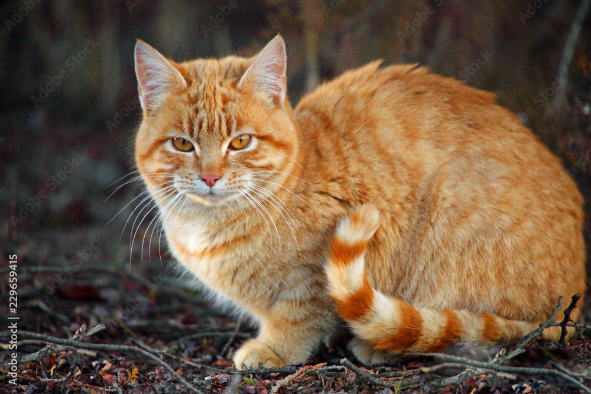

Alle elsker katter (håper jeg). Om man liker de eller ikke, er de det mest populære kjæledyret i hele verden.
Jeg har tre katter, de heter: Juni, Wimsy og Paris. Paris er oransje og 11 år gammel, Wimsy er svart og hvit og hun blir 5 år gammel i år, Juni er dattera til Wimsy, hun er svart og hvit å blir 4 år gammels i år.
Nok om mine katter, nå vil jeg vise deg noen katteraser:
Dette er en oransje tabby katt. Tabby er ikke en rase , men et mønster. De har en M markering i pannen, striper ved øynene og over kinnene, langs ryggen, rundt bena og halen. Dette er sånn Paris ser ut. Vil du finne ut mer om Tabby? Du kan finne ut mer om katteraser her!